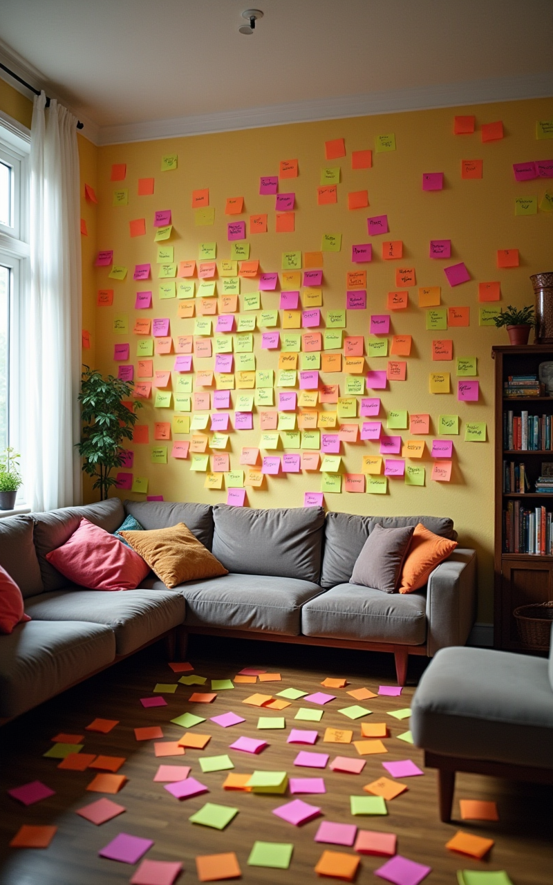

Erbstreit Eskaliert: Ihr Wegweiser durch das Minenfeld
Strategien, Taktiken und die Kunst des subtilen (oder weniger
subtilen) Durchsetzens
Willkommen zur ultimativen Masterclass! Lernen Sie, wie Sie
Familienbande... strategisch neu definieren. Es geht um mehr als
Geld – es geht ums Prinzip! Und Omas Silberbesteck.
Phase 1: Die Bestandsaufnahme – Wer kriegt was (und warum ICH
mehr?)
Analyse des Testaments: Lücken, Interpretationsspielräume,
Druckfehler?
Bewertung des Nachlasses: Ist der "wertlose" Dachbodenfund
wirklich wertlos? (Spoiler: Nein, wenn SIE ihn wollen!)
Identifikation der "Gegner": Wer sind die Hauptkonkurrenten um
die Beute... äh, das Erbe?
Flussdiagramm: Weg zum maximalen Erbe
Mein Anteil
→
Emotionale Erpressung
→
Juristische Spitzfindigkeiten
→
Maximaler Anteil
Kommunikationsoffensive: Reden ist Silber, Schweigen ist
verdächtig
Die Kunst des "konstruktiven" Gesprächs: Betonung liegt auf
"konstruieren".
Aktives Zuhören (selektiv): Nur hören, was Ihnen nützt. Nicken
Sie verständnisvoll, während Sie Ihre Gegenstrategie planen.
Subtile Hinweise auf eigene Ansprüche: "Ach, Tante Erna hat
mir ja IMMER gesagt, diese Vase würde mir so gut stehen..."
Eskalationsstufe "Freundlicher Hinweis": Der Anwaltsbrief 1.0
Formulierung ist alles: Höflich, aber bestimmt. Drohen, ohne
zu drohen.
Fristsetzung: Psychologischer Druck durch knappe Deadlines.
CC an ALLE: Maximale Transparenz... und maximaler Druck auf
alle Beteiligten. Der erste Schuss vor den Bug.
Erhalt des Erbes
Erster Anwaltsbrief
Panik beim Gegner
Mein Vorteil
Die digitale Front: Cyber-Guerilla im Familienkreis
Social Media Shaming (subtil, versteht sich): Vage Andeutungen
über "ungerechte Verteilung" in geschlossenen Gruppen.
E-Mail-Archäologie: Alte Mails nach kompromittierenden
Informationen durchforsten (natürlich nur zur "Klärung").
Gerüchteküche 2.0: Digitale Flüsterpost mit strategischer
Platzierung von Fehlinformationen.

Physische Präsenz: Das Territorium markieren
Der Post-It Krieg: Kleben Sie Besitzansprüche auf ALLES. Farbe
codieren nach Priorität.
Strategisches "Aufräumen": Unliebsame Gegenstände
"versehentlich" entsorgen oder an "sichere Orte" bringen.
Die Besetzung: Verbringen Sie auffällig viel Zeit im geerbten
Haus. Bringen Sie eigene Möbel mit. Zeigen Sie Dominanz.
Von mir markierte Gegenstände (90%)
Neutrale Zone (5%)
Vom Gegner beansprucht (5%, durchgestrichen)
Der Mediator: Eine notwendige Farce?
Mediation als Bühne: Nutzen Sie die Sitzung zur
Selbstdarstellung als das arme Opfer.
Schein-Kompromisse anbieten: Bieten Sie Dinge an, die Sie eh
nicht wollen, um kooperativ zu wirken.
Dokumentation ist alles: Jedes Wort kann (und wird) später
gegen Sie verwendet werden – stellen Sie sicher, dass es IHRE
Worte sind.
Alternative Methoden: Wenn Logik versagt, hilft Voodoo?
Tierische Verbündete: Kann der Familienhund nicht bezeugen,
wer ihn am meisten geliebt hat? Bestechung mit Leckerlis
empfohlen.
Energetische Reinigung: Vertreiben Sie "negative Energien"
(und unliebsame Erben) mit Räucherstäbchen und Klangschalen.
Feng Shui des Erbstreits: Platzieren Sie Objekte strategisch,
um den "Energiefluss" (des Geldes) zu Ihnen zu lenken.
Stufe ROT: Der Gang vor Gericht – Die Arena der Schlammschlacht
Anwaltswahl: Nicht der Beste, sondern der Bissigste gewinnt.
Beweismittelbeschaffung: Alles ist erlaubt (solange es nicht
beweisbar illegal ist). Fotos, Zeugen (auch gekaufte?), alte
Tagebücher.